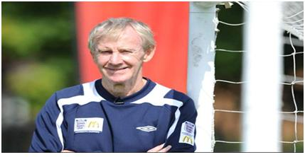
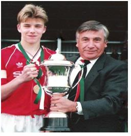

Chương Ba

uy đã ký hợp đồng với Manchester United, David Beckham phải học nốt hai năm để hoàn tất chương trình trung học Chingford, trước khi có thể giành toàn thời gian cho bóng đá. Do vậy, trong giai đoạn học việc, cậu chỉ tập trung với CLB một năm 2 – 3 lần[1], thời gian còn lại vẫn ở London cùng gia đình, và vẫn chơi bóng cho Ridgeway Rovers. Để đánh dấu năm cuối đời học sinh, David đi…xỏ lỗ tai. Khi hay chuyện, ông Ted nổi đóa:
-Mày xỏ tai làm gì hả con? Đi đá banh mà đeo bông tai à? Người ta sẽ nói gì?
Nhưng ông cũng như bà Sandra đều biết rằng mình không thể quản được cậu con trai mãi mãi. Chỉ ít lâu sau, David lên đường đi “định cư” ở Manchester, bắt đầu cuộc sống tự lập.
Không như một số đội bóng khác, Manchester United thuê nhà dân cho các cầu thủ trẻ trọ, chứ không để họ trọ trong ký túc xá. Cầu thủ trẻ biết bao là đông, để ở chung trong ký túc xá rất khó quản, không bằng chia lẻ ra từng nhóm 2 - 3 người, mỗi nhóm ở một nhà trọ. Chủ nhà ai nấy được Sir Alex Ferguson giao nhiệm vụ theo dõi sát sao các cậu trẻ tại nhà mình, hễ thấy cậu nào có biểu hiện bê tha, đồi trụy là phải báo lên Sir ngay.
Ban đầu, David trọ tại nhà một cặp vợ chồng người Scotland. Ở đây, chủ nhà không muốn mất công chạy ra chạy vào mở cửa, nên cấp cho cậu bộ chìa khóa riêng. Không may, một lần David ra ngoài, lỡ để quên chìa khóa trong phòng, đến lúc về đành phải bấm chuông. Chủ nhân xuất hiện với vẻ mặt giận dữ, cầm tai cậu xách lên! Ông Ted biết được, giận lắm, ngay lập tức liên lạc CLB, đề nghị chuyển nhà cho con. David được chuyển đến nhà bà Eve Cody, ở chung với bạn học John O’Kane. Bà Cody hiền lành, không dữ tợn như chủ nhà trước, song có tật hay mò vào phòng David lục lọi đồ đạc. Thêm nữa, nhà bà lại quá xa sân tập, khiến David phải nhờ cha xin chuyển nhà một lần nữa.
Đến căn nhà thứ ba thì David hoàn toàn hài lòng. Nhà này nằm ngay đối diện The Cliff[2], chính là nơi ngày xưa Mark Hughes từng trọ. David mừng rơn khi được sắp xếp cho ở phòng cũ của Hughes. Ông bà chủ nhà, Tommy và Annie Kay, hết lòng chăm nom David, coi cậu như con trai ruột. Bà Annie nấu ăn lại khéo, ngày ngày đều chiêu đãi David những món ngon chảy nước miếng.
“Lần đầu gặp David, tôi không thể ngờ đó lại là thủ quân tương lai tuyển Anh”, Annie Kay kể, “Tuy đỏm dáng, David dễ thương và chăm chỉ lắm, không bao giờ lười đâu. Anh chàng luôn tự thay drap giường, không bao giờ nhờ đến tôi, phòng của anh chàng lúc nào cũng gọn ghẽ từng ly từng tý. Chẳng bù với Mark Hughes, hồi còn ở đây, hắn quẳng đồ khắp nơi.”
“Sau này, chẳng qua Victoria “tỉa tót” David thêm một tẹo”, bà Kay nói tiếp, “chứ trước khi biết Victoria, David đã “thời trang” lắm rồi. Ngày mới dọn đến, anh chàng xách theo bảy túi quần áo, trong khi các cầu thủ khác chỉ có hai thôi. Mới 16 tuổi, nhưng anh chàng luôn sành điệu, luôn nổi bật giữa đám đông. Biết bao cô mê đấy, mà anh chàng chả thèm quan tâm. Anh chàng vẫn thân thiện, vẫn bắt chuyện với các cô, có điều chỉ toàn nói chuyện bóng đá.”
Bà Kay chỉ nói đúng một phần. Quả thật David rất chuyên tâm tập luyện, thỉnh thoảng mới đi chơi, mà mỗi lần đi chơi đều về trước 10 giờ tối. Song cậu cũng có ý trung nhân, một cô gái nhỏ nhắn, xinh xinh mang tên Deana. Mối tình đầu đời của cậu lãng mạn và trong sáng, kéo dài suốt ba năm. David thường tới chơi nhà Deana, đến độ trở nên thân thiết với cha cô: ông Ray, một cổ động viên thuần thành của…Liverpool. Ông Ray hay rủ David đi xem bóng đá ở Anfield. Ông cũng dắt cậu đi quán nhậu, cho cậu biết thế nào là mùi đời! Nể ông lắm nên David phải đi, chứ cậu chỉ uống chút cay đã say bí tỷ. Không rõ vì sao mối tình David và Deana tan vỡ, nhưng sau ngày chia tay, cả hai đều trân trọng những kỷ niệm đẹp về nhau. Khi David đã nổi tiếng, báo giới tìm tới Deana, hứa hẹn trả những món tiền lớn, nếu cô đồng ý kể lại chuyện ngày xưa. Deana từ tốn từ chối tất cả.
Dù xa nhà, David không cảm thấy cô đơn, bởi bên mình đã có ông bà Kay và Deana. Cậu không nhớ cha mẹ, vì mỗi tuần, họ đều lên Manchester xem cậu thi đấu. Chỉ là những trận đấu giải trẻ thôi, nhưng có con trai tranh tài, ông Ted và vợ không thể không xem[3]. Cứ đến ngày đấu, hai vợ chồng lọ mọ dậy từ sáng sớm, 5 giờ sáng bắt đầu khởi hành, lái xe suốt bốn tiếng để tới sân The Cliff. Lynne, chị gái David, đã trưởng thành nên ở lại trông nhà, còn Joanne vì còn quá nhỏ nên phải dậy sớm đi theo cha mẹ. Được cái Joanne chẳng phàn nàn gì, bởi cô bé cũng mê bóng đá, và thần tượng anh.
Trên sân tập The Cliff, David hằng ngày được các HLV như Eric Harrison và Nobby Stiles tận tình chỉ dạy. Nếu phải kể ra 3 người thầy có ảnh hưởng lớn nhất đến David, 2 người đầu là cha cậu và Sir Alex Ferguson, người thứ 3 không ai khác chính là Eric Harrison. Cho đến ngày nay, mỗi lần cần một lời khuyên, David đều tìm đến Harrison, vì biết ông tính tình bộc trực, luôn nói thẳng những điều suy nghĩ, không bao giờ bẻ cong sự thực cho thuận lỗ tai kẻ khác. Harrison rất tận tâm, thương yêu học trò, nhưng đồng thời cũng dữ dội, nghiêm khắc. Mỗi khi đội trẻ đấu tập, ông thường đứng theo dõi bên cửa sổ văn phòng. Hễ học trò mắc lỗi, ông đấm thình thình vào cửa sổ, rồi quát tháo ầm ầm. Các cậu trẻ nghe quát, tái cả mặt, ai nấy lấm lét nhìn lên, nếu thấy Harrison đứng đấy còn đỡ, nếu không thấy thì đích thị ông thầy đang từ văn phòng hùng hục chạy xuống sân, chuẩn bị mở công tắc “máy sấy”. Harrison “sấy” thì chẳng thua kém gì sếp Fergie!
Nhận thấy David hơi “mỏng cơm”, yếu về tranh chấp và không chiến, Harrison bắt cậu phải tập đi tập lại bài đối kháng trong vòng cấm địa. Trong bài này, David phải cố gắng tỳ đè, sao cho thắng được đối thủ, thường là Gary Neville, để ghi bàn. Kết quả của những buổi tập: David bao giờ cũng bị Gary cho “ăn đòn” bầm dập, thâm tím mình mẩy. Tuy nhiên, chính những bầm dập ấy đã góp phần giúp David lớn mạnh hẳn lên.

HLV Eric Harrison (Ảnh: Goal)
Bên ngoài Old Trafford, Eric Harrison ít được biết đến. Nobby Stiles thì không thế. Ông là ngôi sao cùng thế hệ với “tam bất tử” Bobby Charlton, Denis Law và George Best, từng giành chức vô địch World Cup cùng đội tuyển Anh năm 1966, và Cúp C1 cùng Manchester United năm 1968. Harrison dữ dội bao nhiêu thì Stiles dịu dàng bấy nhiêu, luôn luôn lịch thiệp, luôn luôn nhẹ nhàng với học trò. Song đấy là Stiles lúc bình thường, còn lúc bóng đã lăn, còi đã thổi, ông bỗng biến thành con người khác. Cha con Beckham đều nhớ rõ chuyện xảy ra trong trận đấu giữa đội trẻ United và một đội của Ireland. Khi cầu thủ Ireland chơi xấu, đá David ngã lộn mèo, Nobby Stiles nhảy ngay vào sân, sừng sộ:
-Thằng kia! Ỷ lớn xác phỏng? ĐM, giỏi thì vào chơi với tao này, đồ mất dạy! Mày tưởng mày ngon hả? ĐM, ra đây tao coi thử mày ngon cỡ nào! Ra đây, ra đây, coi nào!
Chửi xong quay lại, thấy Ted Beckham đứng ngay sau, Stiles đỏ cả mặt:
-Xin thứ lỗi, ông Beckham. Tôi nói bậy quá. Tôi không biết ông đang đứng đây. Xin lỗi, xin lỗi.
-Không sao – ông Ted cười xòa – trong đầu tôi nghĩ y hệt những gì ông nói.
Không trực tiếp “đứng lớp” như Harrison và Stiles, Sir Alex Ferguson vẫn theo dõi sát sao những tiến triển, nắm rõ những điểm mạnh, điểm yếu của David, và thường xuyên gặp gỡ, chỉ dạy cậu. Để động viên các học trò thiếu niên, ông hay cho họ sang tập chung cùng đội một. Cứ mỗi lần như thế, David lại lâng lâng hạnh phúc, bởi có dịp sát cánh với hai thần tượng Bryan Robson và Mark Hughes, cùng các ngôi sao khác như Steve Bruce, Gary Pallister…
Môi trường United những năm cuối 1980, đầu 1990, có thể nói là hoàn hảo cho David Beckham. Thầy dạy hay đã đành, mà học trò cũng toàn người giỏi. Kể từ những ngày “Đồng Ấu Busby”, Old Trafford mới lại đón nhận một lứa học viên hứa hẹn đến vậy. Các cầu thủ trẻ tài năng cạnh tranh lành mạnh với nhau, thúc đẩy nhau ngày một tiến bộ. David đến từ London, ban đầu chưa quen với nhóm Manchester “gộc” gồm Paul Scholes, Nicky Butt, cùng anh em Gary và Phil Neville. Thấy David đỏm dáng, ăn diện, nhóm này có vẻ dè dặt. Thế nhưng, càng tiếp xúc với David nhiều, họ càng nhận ra bản chất thân thiện, dễ thương của cậu, và mở rộng vòng tay. Chẳng bao lâu sau, Gary Neville và David đã trở thành đôi bạn chí thân. Ông Ted cũng trở thành tâm giao của cha Gary, người mang cái tên ngộ nghĩnh Neville Neville. Ở đâu có Beckham và Neville con trên sân cỏ, ở đó có Beckham và Neville bố trên khán đài.
Dấu ấn David ở đội trẻ United dần được thể hiện rõ nét. Ngay các đàn anh trong đội một cũng phải khâm phục khả năng sút phạt và chuyền dài của cậu. Năm 16 tuổi, trong trận gặp đội trẻ Everton tại Littleton Road, David gây ấn tượng với cú lốp bóng từ phần sân nhà, ghi bàn nâng tỷ số lên 2 – 1. Bàn này giờ đây hầu như không ai nhớ đến, song nó cũng đẹp chẳng kém bàn thắng đình đám vào lưới Wimbledon mấy năm về sau. HLV Nobby Stiles đánh giá cao David, trao cho cậu băng thủ quân đội U-16 United, trong chuyến đi Bắc Ireland dự Milk Cup[4] năm 1991. Với đội hình gồm những cầu thủ triển vọng như David Beckham, Paul Scholes, Nicky Butt, Gary Neville, Keith Gillespie, Robbie Savage, và Ben Thornley, chẳng lạ gì khi United lên ngôi vô địch. Milk Cup năm đó chính là danh hiệu đầu tiên của David trong màu áo đỏ.
Không chóa mắt với thành công ban đầu, David ý thức được mình còn phải cố gắng nhiều. Cậu luôn ghi nhớ nằm lòng lời dạy của cha “Ký hợp đồng với United thì đã là chi? Khi nào con khoác áo đội một, đó mới là thành tựu”. Chẳng cho mình đặc biệt, ngoài tập luyện ra, cậu vẫn nai lưng lao động như những cầu thủ trẻ khác: Đánh giày cho đàn anh, rồi lau chùi, cọ rửa phòng thay đồ và phòng tắm. Đương nhiên, những việc ấy phải làm là vì nghĩa vụ, chứ không ai thích thú gì. Lúc David giành việc lau chùi phòng tắm, đồng đội Chris Casper tỵ nạnh, cho rằng việc đó nhẹ, dọn phòng thay đồ như cậu ta mới là việc nặng. Láu lỉnh, David đợi đến gần mùa Giáng Sinh thì đề nghị đổi việc với Casper. Thế là trong khi Casper cặm cụi trong nhà tắm, David ngồi ở bên ngoài, tha hồ nhận tiền lì xì mùa lễ hội từ các đàn anh…
David không dám tự mãn cũng hợp lý, bởi cậu đến đội trẻ United đúng vào thời điểm "ra ngõ đụng anh hùng". Cậu nổi trội thật, nhưng đồng đội chung quanh nổi trội không kém. Đó là chưa kể việc cả David lẫn các bạn đồng lứa đều bị che phủ bởi cái bóng quá lớn của thần đồng Ryan Giggs[5]. Đi Bắc Ireland, David được đeo băng đội trưởng, chứ về Anh đá Cúp FA Trẻ, cậu nhiều trận phải ngồi dự bị. Vị trí sở trường của David, tiền vệ cánh phải, đã có Keith Gillespie trấn giữ. Đến khi Gillespie được đẩy lên chơi tiền đạo, David lại phải cạnh tranh chỗ đứng với Robbie Savage. Năm 1992, Savage bị chấn thương phải nghỉ dài hạn, David mới chắc một suất đá chính.
Ngày United giành quyền vào tranh chung kết Cúp FA Trẻ 1992 với Crystal Palace, thành Manchester ngập tràn niềm hy vọng lạc quan. Cúp FA Trẻ chẳng phải danh hiệu to tát, song đối với Quỷ Đỏ, nó mang ý nghĩa rất đặc biệt. Từ khi thế hệ "Đồng Ấu Busby" lập chiến tích vô tiền khoáng hậu 5 lần liên tiếp vô địch FA trẻ, tên tuổi United đã gắn liền với cúp này. Lần cuối United giành cúp vào năm 1964, trong đội hình họ có mặt George Best, người góp công lớn trong chiến dịch chinh phục Cúp C1 4 năm sau. Cho nên đăng quang Cúp FA trẻ được nhiều người coi như một điềm lành, báo hiệu một kỷ nguyên rực rỡ sắp đến cho đội chủ sân Old Trafford.
Được tăng cường Ryan Giggs từ đội một, United đã mạnh lại càng mạnh so với Crystal Palace. Không run chân trước sức ép phải vô địch sau 28 năm chờ đợi, đội dễ dàng hạ gục đối phương 3 -1 trong trận chung kết lượt đi. Nicky Butt xuất sắc nhất trận với cú đúp, bàn còn lại do công David Beckham từ một cú volley chân trái hiếm hoi. Trận lượt về tại Old Trafford, trước sự cổ vũ nồng nhiệt của 32 000 khán giả nhà, David và đồng đội tiếp tục giữ vững phong độ, thắng nốt 3 - 2. Đội hình đăng quang mùa ấy, về cơ bản cũng là đội hình đăng quang Milk Cup một năm trước, chính là “Thế Hệ 92” lừng danh, ở Việt Nam thường được gọi là Thế Hệ Vàng Alex Ferguson.

David Beckham, thủ quân U-16 United, nhận Milk Cup năm 1991 (Ảnh: Discovernorthernireland)
Chú thích:
[1] Trong gian đoạn này, David chưa biết nhóm Paul Scholes, Nicky Butt,… mà chỉ chơi thân với Keith Gillespie và John O’Kane.
[2] The Cliff: Sân tập cũ của Manchester United, sau được thay thế bởi trung tâm Carrington.
[3] Chỉ những đội trẻ của Manchester United cũng thu hút được trung bình 2 000 đến 3 000 khán giả mỗi trận đấu.
[4] Milk Cup: Một hệ thống giải đấu quốc tế giành cho các cầu thủ trẻ trên khắp thế giới, được tổ chức thường niên ở Bắc Ireland. Thực chất, Milk Cup bao gồm 3 cúp, giành cho 3 lứa tuổi: U-19, U-16, và U-14.
[5] Ryan Giggs và Phil Neville thường được xếp vào cái gọi là “Thế Hệ 92”. Đó là tính chung cho tiện. Thật ra, so với “Thế Hệ 92”, Phil Neville thuộc về lứa sau, anh khoác băng thủ quân United vô địch Cúp FA trẻ năm 1995. Còn Ryan Giggs lại là lứa trước, tức lứa “Nhi Đồng Fergie”, cùng với những Lee Martin, Lee Sharpe… (xem thêm Nguyễn Minh (2012), Sir Alex Ferguson – Chân Dung Một Huyền Thoại).